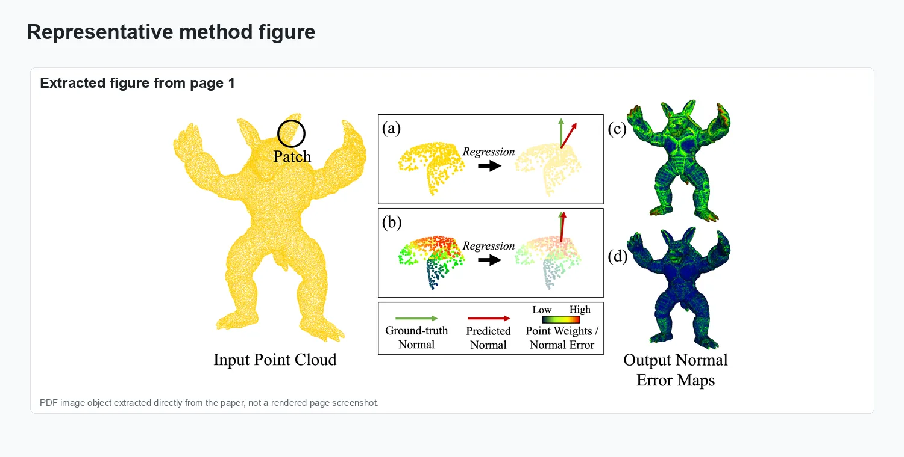
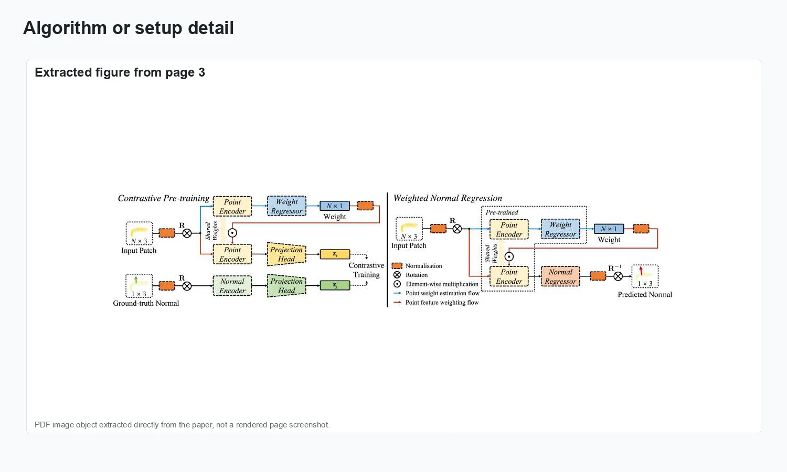
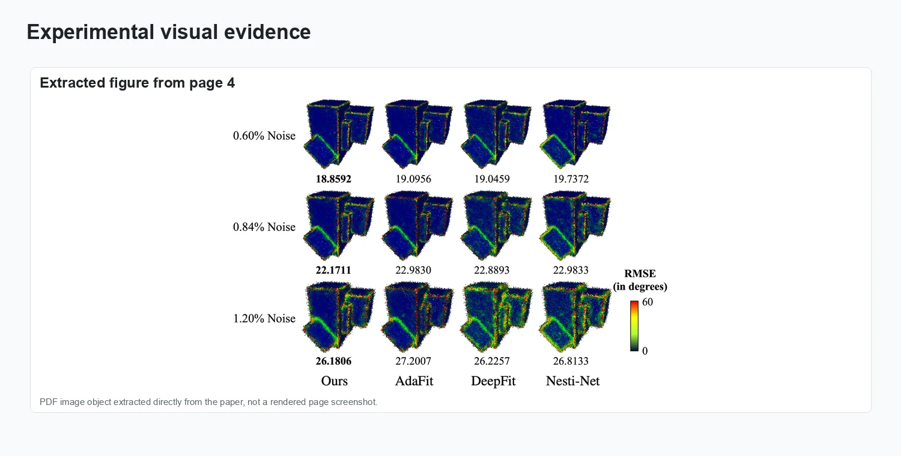
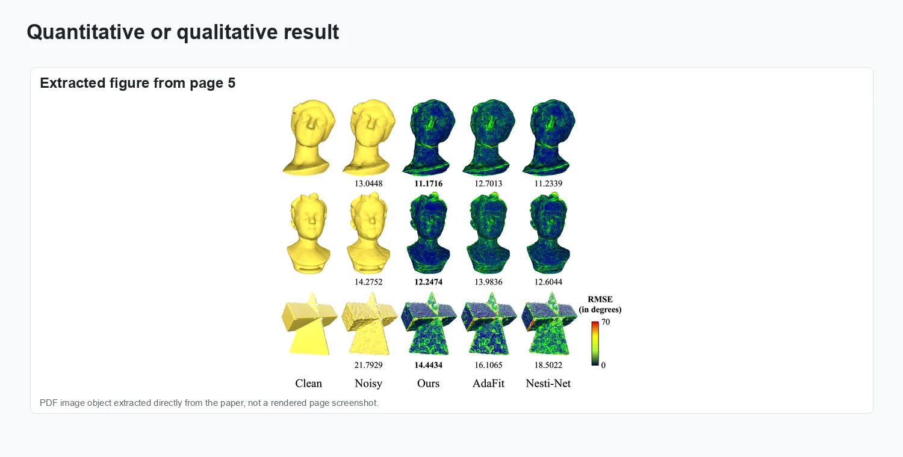
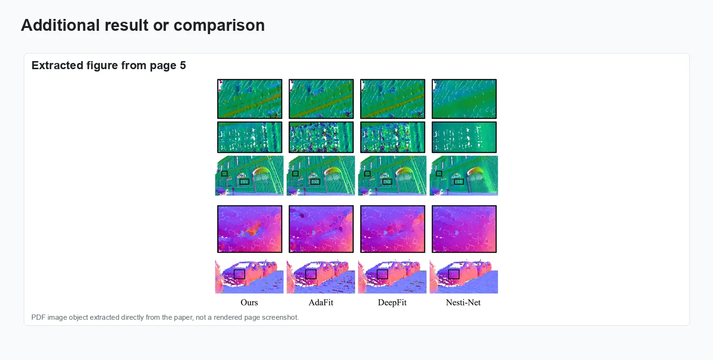

Weighted Point Cloud Normal Estimation

Accurate surface normals are essential for nearly every 3D geometry processing pipeline, from Poisson surface reconstruction to ambient occlusion rendering. The standard approach—fitting a plane to each point’s k-nearest neighbours via PCA—is fast but fragile: near sharp edges, neighbours from both sides of the feature contribute equally, averaging out to an erroneous normal; in noisy regions, outlier neighbours corrupt the plane fit. This paper proposes a learned weighted normal estimation scheme that addresses both failure modes. For each query point, a lightweight network predicts a scalar weight for each neighbour based on its geometric relationship to the query—distance, angle deviation from a provisional normal estimate, and local density. The weighted neighbourhood is then used for a robust plane fit that suppresses the contribution of cross-feature and outlier neighbours. The weighting network is small enough to process millions of points per second on a standard GPU. Evaluated on standard normal estimation benchmarks and presented at ICME 2023, the method reduces mean angular error over PCA baselines at edges and noisy regions while remaining competitive with significantly heavier learning-based estimators.
Problem setting
Point cloud normal estimation—computing a unit surface normal at each 3D point—is a foundational pre-processing step for surface reconstruction, rendering, and shape analysis. Standard PCA-based methods treat all neighbours equally, leading to inaccurate normals near sharp features or in the presence of noise and outliers. This paper proposes a weighted normal estimation scheme that assigns adaptive weights to each neighbouring point based on geometric consistency with the local surface model.
The figures below collect representative visual evidence from IEEE International Conference on Multimedia and Expo (ICME) 2023.
Method and visual evidence
The visuals show adaptive local weighting for normal estimation and angular-error comparisons on noisy point clouds.

Method overview.

Representation and setup.

Experimental evidence.

Result comparison.

Additional visual result.
Results and impact
The evaluation reported in IEEE International Conference on Multimedia and Expo (ICME) 2023 is summarized through the figures above.